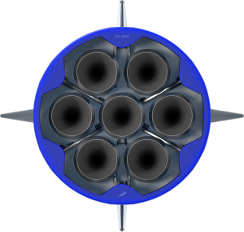

@@include("./layout/header.html")
以太號
AETHER
市場唯一以商務客群為主的火箭預約系統
承包八大行星航空站點的太空運輸品牌
-
65253
行駛光年
-
213
行駛光年
-
1688
探索客人數

關於 AETHER
Stelar X 最新研發的 Merlin - Z 型豪華客艙火箭全長約 117 米，相當於2座自由女神。
搭載 4 架推進器和 8 座直列式 RS-25 引擎，扣除燃料及其他相關物件，可載重約13萬公斤的物資前往太空，每節車廂最大可乘載16人，包含獨立座位與影音視聽器材，是一架結合生活與智能科技的超級火箭。
- 真空推力
- 海平面推力
- 推重比
- 燃燒室壓力
- 真空比衝
- 海平面比衝
- 914 kN
- 845 kN
- 180.1
- 9.7 MPa
- 311 s
- 282 s
真空發動機
由單個 Merlin 真空發動機提供動力，將Stellar X 的有效載荷送至所需軌道。第二級發動機在級分離後幾秒鐘點燃，並且可以多次重新啟動以將多個有效載荷放置到不同的軌道上。為了獲得最大的可靠性，第二級具有冗餘點火器系統。與第一級一樣，第二級由高強度鋁鋰合金製成。

梅林引擎
七個第一級 Merlin發動機集中在一起，在飛行過程中可以確保維持穩定動力，保持高速於宇宙間行駛。
AETHER GX
整體座艙寬敞舒適，
身體皆可伸展，舒緩坐在辦公一整天的辛勞！
-
大座位寬敞舒適
讓您上班路不在擁擠在捷運車廂
下班累了一天可以坐在椅子上好好休息
-
讓商務乘客都說讚的穩定運輸系統
0 事故、0 誤點
上班族最值得信賴的交通系統
專屬管家服務
由管家進行一對一的服務，隨時隨地完成您的需求，享受頂級奢華的尊榮感
-
提供客製化過夜包
因應喜好調整艙位設置
在星際旅途之中
打造放鬆身心的第二個家！
-
引領貴賓進行艙內導覽
探索火箭工藝之美
並於航行期間全程開放設施使用
酒吧、交誼廳、親子空間！
-

享受專屬的加值服務
創造前所未有的新體驗
太空漫步、座艙景觀室
與無邊界泳池！
座艙景觀室
遨遊在星際的旅途中，艙內提供絕佳的觀星服務
由 360° 全景透明天窗打造成的觀景室
讓您在旅途之中也能探索星際之美
@@include("./layout/footer.html")